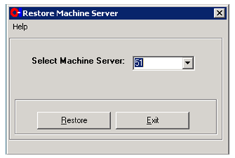
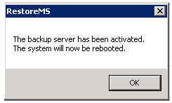

Activating a Backup Machine Server
Purpose
This document describes how to replace a running Machine Server with the backup server. These instructions assume that SWSet 223 (SCS-0237-GR223 or greater) is being used, although this restore process is very similar to that used for older SWSets.
Application
This work instruction applies to all Space Plants that have FSC and Space IS Machines.
Safety
This swap can occur with the Forming Machine still operational. However, no parameter changes can be made during this procedure because the NUI will be unavailable.
Procedure
- This procedure assumes that a backup machine server has been configured using the instructions in document FES-03-118 Configuring Machine Server Backups.
- Verify that the Machine Server backups are current using the instructions in document FES-03-117 Verifying Machine Server Backups.
- Verify that the active software set on the backup server is the same as the primary server.
- Restore the backup of the primary server onto the backup server.
- Log off the obop account (using the sequence Start-, andgt;Shutdown-, andgt;Log Off).
- Log onto the Machine Server as obsetup (password: SetupServer).
- Access the Restore Machine Server utility (see Figure 1).
Figure 1. Figure 1: Restore Machine Server Utility 
- Using the drop-down box, select the Machine Server to be restored (see Figure
2).
Figure 2. Figure 2: Selecting Machine Server to be Restored 
- Click the Restore button.
- Carefully read the resulting popup message. Warning: There is no way to reverse the restore process after clicking the OK button on the popup message. Click the OK button to continue (if desired).
- A series of two black DOS command windows will be displayed, with commands scrolling by as they complete their work.
- Once the restore process is complete, an information window will be displayed that
the server is going to be rebooted (see Figure 3). Click the OK button.
Figure 3. Figure 3: Reboot Message 
- When the server reboot completes, it will have all the operating parameters of the original server.
- Power down the backup machine server (Start -, andgt; Shutdown).
- Disconnect the backup machine server, and move it to the same room as the primary server.
- Power down the primary server (Start-, andgt;Shutdown).
- Move all of the connections from the primary server to the backup server. This will include the following connections:
- Power.
- Video.
- Keyboard and Mouse.
- Plant and Machine Network.
- MSG
- Note that the serial adapter for the MSG cable maybe screwed to the Machine Server. If this is the case, a small flat-head screwdriver will be required to disconnect the cable.
- Power up the backup server.
- Follow the instructions in SOP-06-008-B (Changing the MDMS IP Address) to change the IP address of the backup server to that of the primary server.
- Re-run SCS Setup on the backup server.
- Make any necessary repairs to the primary machine server and put it back into use as a backup
Equipment
Space Machine Server.
Small flat-head screwdriver to disconnect MSG cable from the Machine Server (if applicable).
Reference
- SOP-16-009 Configuring MDMS Backups.
- SOP-16-008 Verifying MDMS Backups.
- SOP-06-008-B Changing the IP Address of the Machine Server.
Document Classification
- Asset Protection and Stability
- Organization and Training
Collaboration
|
Country Group |
Role |
Name |
|
Americas North |
Forming Electronics Specialist |
Dan Knuckles |
|
Europe |
Forming Electronics Leader |
Remko Beckers |
|
Central Europe |
Regional Leader Forming Electronics |
Ruud Bormans |
|
France - Spain |
Jean-Pierre Locato |
Jean-Pierre Locato |
|
Latin America |
IS Machine Leader |
Miguel Morales |
|
Engineering - Forming |
Associate Engineer |
Jose Gonzalez |
|
Global |
Global Forming Electronics Leader |
Franklin Barrios |
Revision History
| 2006-06-16 |
Originally Released as Process Control SOP-06-004-B |
| 2016-12-01 |
Complete rewrite of SOP to update the content and format |
| 2022-06-29 |
Approved by Franklin Barrios, Global Leader FES Network Moved to GMF Site as FES-03-114 |